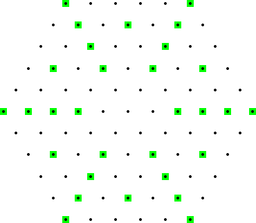

A hexagonal orchard of order $n$ is a triangular lattice made up of points within a regular hexagon with side $n$. The following is an example of a hexagonal orchard of order $5$:

Highlighted in green are the points which are hidden from the center by a point closer to it. It can be seen that for a hexagonal orchard of order $5$, $30$ points are hidden from the center.
Let $H(n)$ be the number of points hidden from the center in a hexagonal orchard of order $n$.
$H(5) = 30$. $H(10) = 138$. $H(1\,000) = 1177848$.
Find $H(100\,000\,000)$.